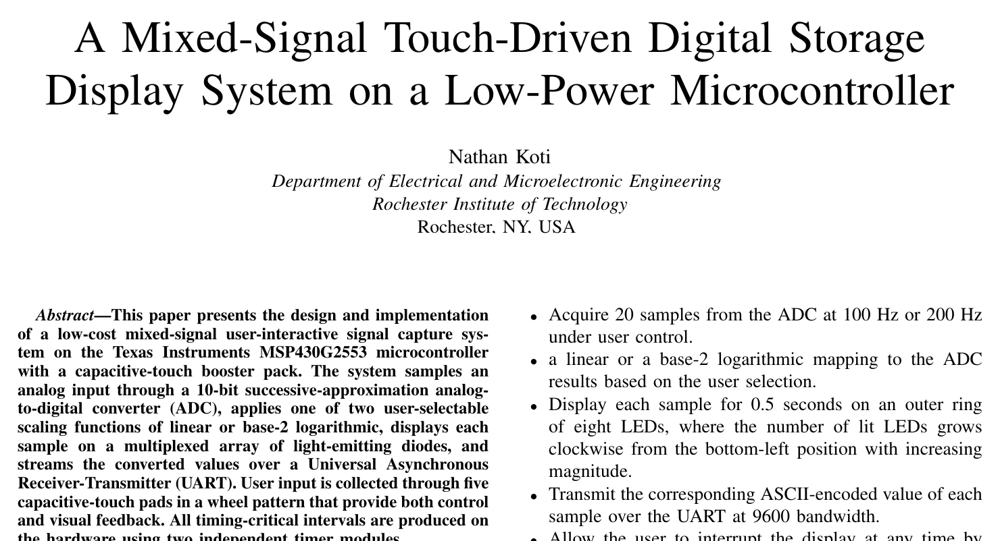

Nathan
Koti
Electrical engineering student at the Milwaukee School of Engineering, graduating in 2029, previously at RIT.
I design digital hardware in VHDL, write embedded firmware in C and assembly, and lay out PCBs in Altium.

Projects

A RISC processor in VHDL
A custom processor with separate program and data memory and a two-bus datapath. It runs real programs: a multiply routine takes about 93 instructions to put 15 × 15 = 225 on the LEDs.
See how it works
Bit-serial adder/subtractor
A 5-bit unit that adds or subtracts one bit per clock, run by an 8-state machine I encoded in Gray code to avoid glitches. Verified at the gate level in ModelSim.
See how it works
Touch-driven data display
An MSP430 system in C and assembly. Touch pads choose the sample rate and scale, the ADC captures a signal, and the result shows on an LED ring and streams over UART, all timed by hardware timers.
See how it works
Microphone board PCB
My board in a six-person team's vehicle audio system: two MEMS microphones sending stereo audio over I2S to an Automotive Audio Bus chip, designed in Altium.
See how it worksSkills
Digital design
VHDL, Verilog, finite state machines, processor datapaths, Quartus Prime, ModelSim
Embedded systems
C, C++, assembly, MSP430, STM32, ESP32, ADCs, hardware timers, UART, I2C
Circuits and PCBs
Altium Designer, schematic capture, LTspice, analog and mixed-signal circuits
Lab work
Oscilloscopes, multimeters, function generators, power supplies, soldering, 3D printing
Coursework: Digital Systems I and II, Embedded Systems Design, Digital Electronics, Circuits I, Semiconductor Devices, Advanced Programming
Education and experience
- Milwaukee School of EngineeringExpected 2029
Bachelor of Engineering, Electrical Engineering - Rochester Institute of Technology2024–2026
Electrical Engineering coursework - University of Illinois Urbana-ChampaignSummer 2023
Engineering Exploration Intern